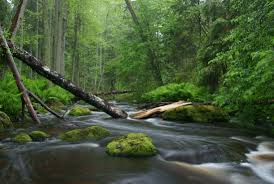

Nikhil Bogawar 23E15A0503
Student at Biet
paragraph
formating

"Nature" refers to the physical world and everything in it, including life, plants, animals, landscapes, and natural phenomena like weather and the universe as a whole. It can also refer to the inherent character of something or the British weekly scientific journal, Nature. Humans rely on nature for essentials like air, food, and shelter, and its study is a cornerstone of science, as seen in journals like Nature and documentary series like PBS's Nature.
Lists
ordered lists
- Ordered list item 1
- Ordered list item 2
unordered lists
- "Nature" refers to the physical world and everything in it, including life, plants, animals, landscapes, and natural phenomena like weather and the universe as a whole. It can also refer to the inherent character of something or the British weekly scientific journal, Nature. Humans rely on nature for essentials like air, food, and shelter, and its study is a cornerstone of science, as seen in journals like Nature and documentary series like PBS's Nature.
-
"Nature" refers to the physical world and everything in it, including life, plants, animals, landscapes, and natural phenomena like weather and the universe as a whole. It can also refer to the inherent character of something or the British weekly scientific journal, Nature. Humans rely on nature for essentials like air, food, and shelter, and its study is a cornerstone of science, as seen in journals like Nature and documentary series like PBS's Nature.
comment and comment syntax
| Students Marks Details |
| S.No |
Name |
Course |
Contact No |
Email |
| Phone no:1 |
Phone no:2 |
| 1 | | | | | |
| 2 | | | | | |
| 3 | | | | | |
| 4 | | | | | |
| 5 | | | | | |
| 6 | | | | | |